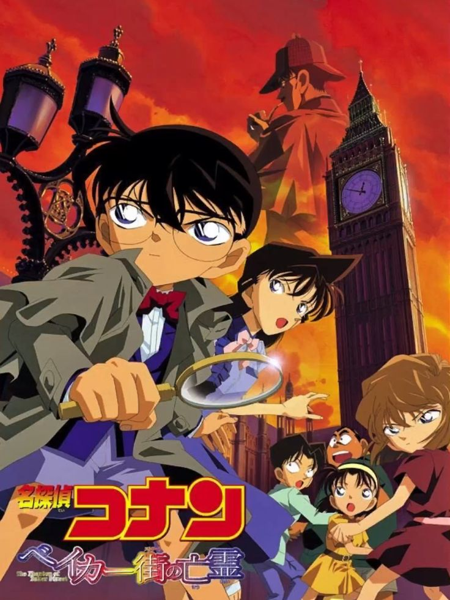
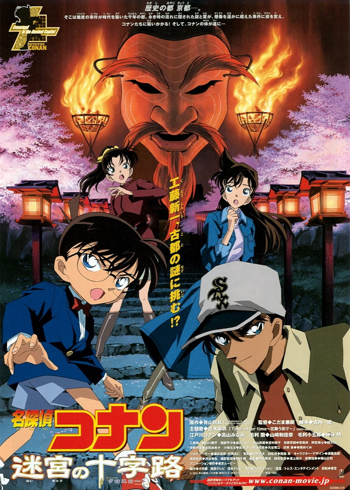
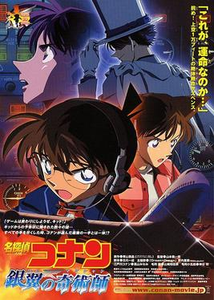
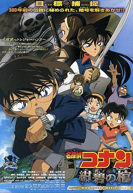
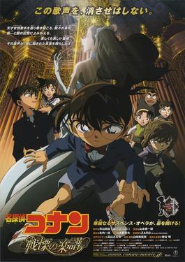
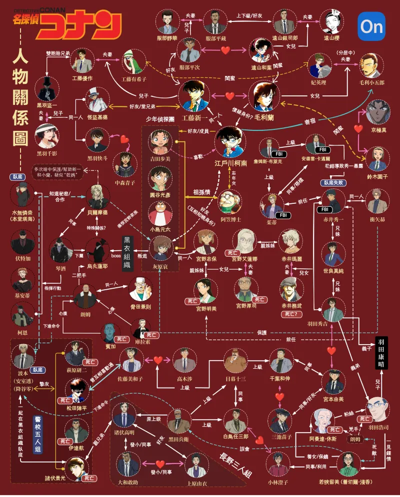

FILE 001江THE LITTLE DETECTIVECASE
LEAD
LEAD
偵探・毛利事務所
江戶川柯南 工藤新一
高中生偵探遭組織灌下 APTX-4869，化名寄住毛利家，暗中追查黑衣組織。
A DETECTIVE CONAN CHARACTER ARCHIVE
真相只有一個。檔案，現在開啟。
少年偵探、秘密組織、交錯的身分——
沿著線索，重新認識每一位關鍵角色。
PEOPLE BEHIND THE CASES
從偵探、家族到秘密組織，
依照角色資料，認識故事裡的每一條線索。
分類依照專案角色資料整理；同一角色可隸屬多個組織或家族。
高中生偵探遭組織灌下 APTX-4869，化名寄住毛利家，暗中追查黑衣組織。
帝丹高中空手道社主將，與新一是青梅竹馬，也一直守護著身邊重要的人。
曾以「雪莉」之名替組織研究藥物；逃離後縮小成孩童，在阿笠博士家生活。
來自大阪的高中生偵探，直率敏銳，與柯南在多次案件中並肩推理。
小蘭的父親、私家偵探；柯南借助麻醉槍與變聲器，讓他獲得「沉睡的小五郎」稱號。
小蘭的好友與鈴木財團千金，個性開朗，總能為朋友帶來意想不到的支援。
FBI 探員，曾以「黑麥威士忌」的身分潛入組織，與柯南聯手追查敵方動向。
日本公安警察，以安室透在波洛咖啡廳活動，並曾以「波本」身分接近組織。
警視廳搜查一課刑警，行動果敢、觀察敏銳，是搜查現場值得信賴的夥伴。
組織的重要幹部，與柯南遭遇後引發故事的關鍵轉折，始終追查叛逃者與線索。
擅長易容與偽裝的組織幹部，行事神祕，與柯南和小蘭之間有複雜因緣。
知名律師，毛利蘭的母親。與小五郎分居，仍然關心家人，也常協助案件。
角色介紹為簡短導覽，作品劇情仍以原作為準。
ON THE BIG SCREEN
每一場大銀幕冒險，
都是一份新的案件紀錄。

01虛擬遊戲把少年們帶進十九世紀倫敦；柯南在福爾摩斯的世界中追尋真相。
倫敦 × 虛擬實境 × 推理
02古都京都連續發生命案，柯南與平次在古蹟與傳說之間追查真兇。
京都 × 平次 × 古典謎團
03怪盜基德鎖定珍貴寶石，柯南則在萬尺高空的班機上面對突發危機。
怪盜基德 × 飛機 × 寶石
04柯南、小蘭與園子來到傳說中的海島，追查海底遺跡與海盜寶藏之謎。
神海島 × 海盜傳說 × 寶藏
05音樂廳接連發生爆炸事件，柯南在古典樂與絕對音感之中找出關鍵線索。
古典音樂 × 音樂廳 × 推理這些是我最喜歡的幾部
ONE CASE. MANY CONNECTIONS.
從一個身分到兩條陣線，
關係的另一端，藏著新的線索。
人物關係圖

人物關係圖由專案資料夾提供。本頁為非官方粉絲導覽，無官方關聯。